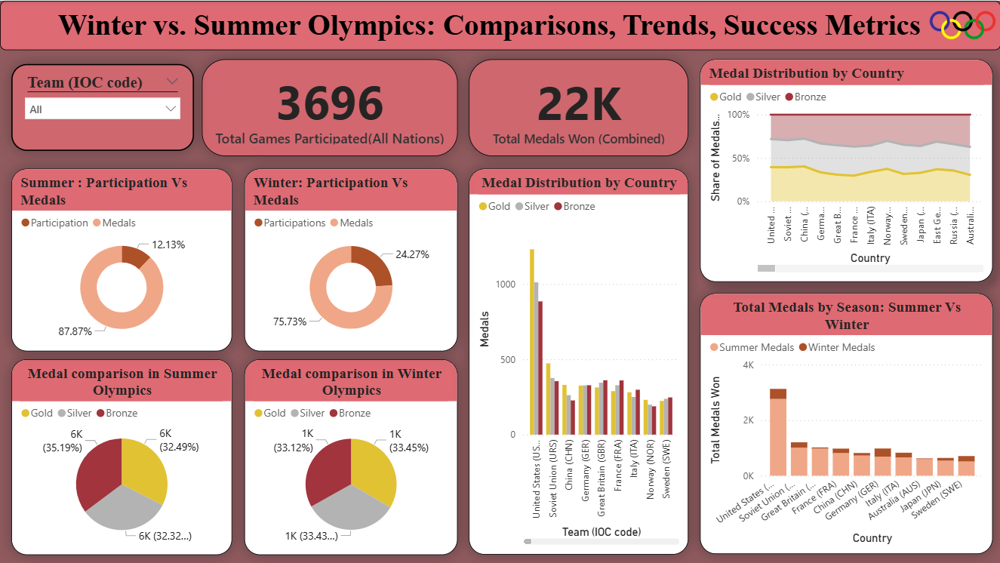

Summer and Winter Olympic Games Data Analysis
A comprehensive analysis of all-time Olympic medal data, comparing country performance across Summer and Winter Games using interactive Power BI dashboards.
// Project Overview
This project analyzes all-time Olympic Games medal data across both Summer and Winter Olympics. Using Power BI, the team developed an interactive dashboard to explore country performance, medal distribution, and participation trends. The analysis highlights global sporting dominance and long-term success patterns across more than 100 nations.
// Key Questions Explored
// Methodology
Collected Olympic medal data from Wikipedia's all-time medal table for both Summer and Winter Games.
Handled missing values, standardized country names using IOC codes, and formatted all numerical fields.
Combined Summer and Winter datasets into a unified structure to enable comparative cross-season analysis.
Built Power BI dashboards with interactive filters, KPI cards, and comparative medal visualizations.
// Key Insights
// Dashboard
